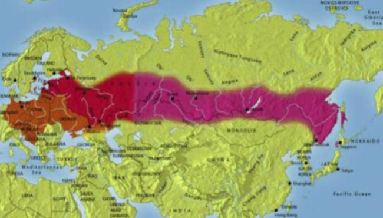
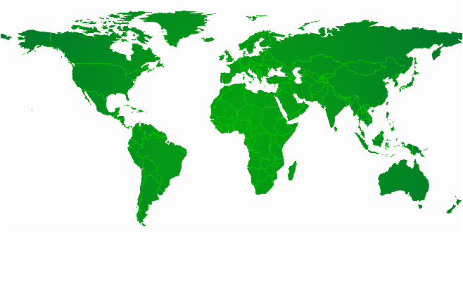

Profilaktyka
Sprawdź jak się chronić przed Kleszczowym Zapaleniem Mózgu i innymi chorobami odkleszczowymi.
Jak się zabezpieczyć
Tereny zagrożone w Europie

-
Wzrost częstotliwości występowania KZM
Wykres
Ryzyko zakażenia KZM w krajach najbardziej dotkniętych problemem istotnie wzrosło
w latach 1974 – 2003.
Dla przykładu na Litwie zapadalność wzrosła o zdumiewającą liczbę 1033%, a w Niemczech
o 574%. Oprócz znanych dotychczas obszarów ryzyka zakażenia KZM powstały nowe w Norwegii
i prawdopodobnie w południowej części Szwecji. Również coraz więcej pojedynczych przypadków
zakażenia KZM jest odnotowywanych na obszarach pozbawionych ryzyka. Wraz z przesunięciem
miejsc żerowania kleszcza pospolitego przewidywane jest przesunięcie występowania KZM na
tereny wyżej położone. Jedynym wyjątkiem dla opisywanego wzrostu zachorowalności na KZM
jest przypadek Austrii, gdzie narodowa kampania na rzecz szczepień spowodowała zmniejszenie
liczby nowych przypadków choroby z 600 do 60.
Wzrost częstości hospitalizacji zależy od wielu czynników. Ewidentnie wiele z tych czynników
działa równocześnie, co powoduje, iż interpretacja znacznie różniącej się rocznej liczby
hospitalizacji oraz częstości występowania wirusa jest trudna.

Sprawdź, w jakich krajach Europy i Azji zanotowano przypadki Kleszczowego Zapalenia Mózgu.
Przed wyjazdem do krajów zagrożonych poproś lekarza o szczepienie przeciw KZM

Zamknij
Japonia
W roku 1993 odnotowano przypadek KZM w południowej części wyspy Hokkaido. Od 1995 roku wirus KZM został wyizolowany z próbek krwi pochodzących od psów stróżujących, grupy kleszczy oraz śledzion gryzoni. Badanie seroepidemiologiczne wykonane u ludzi i zwierząt pokazało, iż wirus KZM może występować endemicznie na terenie Japonii, a przy najmniej na wyspie Hokkaido.Głównym wektorem na wyspie Hokkaido jest kleszcz z gatunku Ixodes ovatus, a sekwencja genomowa oraz analizy filogenetyczne izolatu wirusa wykazały jego bliski związek z podtypem wirusa KZM występującego na terenach Dalekiego Wschodu.
Zamknij
Korea Południowa
W Korei Południowej wirus KZM został ostatnio wyizolowany od kleszczy (Haemaphysalis Iongicornis; Ixodes nipponensis) i myszy (Apodemus agrarius) i sklasyfikowany, jako podtyp zachodnioeuropejski. Wirusa wyizolowano na obszarach Dongducheon, Gyeonggi-do; Jeongseon, Gangwon-do; Hapcheon, Gyeongsangnam-do; i Gurye, Jeonrabuk-do. Przypadków KZM nie odnotowano, ale pojawiło się kilka przypadków chorób OUN o nieznanym pochodzeniu, które są obecnie obserwowane.
Zamknij
Mongolia
W 2004 roku opisywano endemiczne obszary KZM blisko granicy rosyjskiej na północy kraju (prowincje Selenga i Bulgan) oraz wokół stolicy kraju Ułan Bator. Jak do tej pory nie udokumentowano jeszcze klinicznych przypadków choroby.
Zamknij
Kirgistan
Do tej pory nieopublikowane dane pokazujące obecność wirusa KZM u małych ssaków (Alticola argentatus, Apodemus spp. oraz Microtus spp.) sugerują, iż choroba występuje endemicznie na terenie Kirgistanu. Wstępne wyniki sugerują, iż wirus występujący w tym rejonie to podtyp syberyjski. Nie zgłoszono jeszcze klinicznych przypadków choroby.
Korea Południowa
W Korei Południowej wirus KZM został ostatnio wyizolowany od kleszczy (Haemaphysalis Iongicornis; Ixodes nipponensis) i myszy (Apodemus agrarius) i sklasyfikowany, jako podtyp zachodnioeuropejski. Wirusa wyizolowano na obszarach Dongducheon, Gyeonggi-do; Jeongseon, Gangwon-do; Hapcheon, Gyeongsangnam-do; i Gurye, Jeonrabuk-do. Przypadków KZM nie odnotowano, ale pojawiło się kilka przypadków chorób OUN o nieznanym pochodzeniu, które są obecnie obserwowane.
Zamknij
Kazachstan
Kazachstan od dłuższego czasu był uważany za obszar endemicznego występowania KZM. Obszary endemiczne są skupione we wschodnich częściach kraju oraz w regionie miasta Ałmaty. We wschodnim Kazachstanie zgłoszono 34 przypadki zachorowań w 2004 roku, 28 w 2005 i 18 w 2006. W okolicach Ałmaty odpowiednie wartości wyniosły 10, 9 i 6. W mieście Ałmaty 6 przypadków zarejestrowano w 2004 roku, 12 w 2005 i 8 w 2006. W sumie w latach 2004-2009 w Kazachstanie zgłoszono 245 zachorowań.W prowincji Aksu antygen wirusa stwierdzono w mleku krowim za pomocą testu ELISA. Wydaje się, iż obszary zwiększonego ryzyka występowania choroby sięgają znacznie dalej poza obecnie znane tereny, ponieważ antygen wirusa wykryto za pomocą metody ELISA u kleszczy bytujących w rejonie Dżambuł i Kyzyłorda we wschodnim Kazachstanie. Ogólnie uważa się, iż liczba niezgłoszonych przypadków jest znacznie większa.
Zamknij
Rosja
KZM występuje endemicznie na obszarze od Kaliningradu do Władywostoku. W 1996 roku wskaźnik chorobowości wzrósł w dramatyczny sposób z 6000 do 10000 osób rocznie. Najwyższe wartości są notowane w regionach Ural, Perm i Swierdłowsk (13,4 na 100000 populacji; Udmurcja: 53,5 na 100000; Zachodnia Syberia, region Tomska: 72,5 na 100000; Wschodnia Syberia oraz Krasnojarsk: 37 na 100000).
Po 1999 roku, kiedy odnotowano 9995 przypadków zachorowań liczba zakażeń KZM stale spada, osiągając najniższą jak do tej pory wartość 3098 zachorowań w 2007 roku. W latach 2004-2008 zgłaszano rocznie średnio 3642 przypadki choroby. W 2009 roku rozpoznano 3721 zachorowań.
W niektórych regionach kraju zapadalność na KZM stopniowo wzrasta. Zatem w latach 1997-2009 częstość występowania KZM w rejonie Archangielska wzrosła z 1,4 do 11,2 na 100000 mieszkańców.47
Najbardziej niebezpiecznymi ogniskami KZM są te zlokalizowane w południowej części regionu Morza Ochockiego, gdzie znajdują się skupiska sosny czarnej48 oraz w okolicy góry Sikhote-Alin niedaleko Władywostoku.Od stycznia do sierpnia 2004 w regionie Przymorza na dalekim wschodzie Rosji wzdłuż wybrzeża „Morza Wschodniego” (Morze Japońskie) hospitalizowano 126 osób z rozpoznaniem KZM w tym 17 dzieci. Zgłoszono 8 przypadków śmiertelnych. W latach 1996-1999 liczba chorych na KZM w rejonie jeziora Bajkał wahała się od 460 do 780 przypadków rocznie i wykazywała tendencję wzrostową. Względny wskaźnik na 100000 populacji wahał się od 2,6 do 18,1.
Obwód swierdłowski jest od wielu lat znany, jako naturalne miejsce występowania wirusa KZM. Większość przypadków zgłoszono w Jekaterinburgu. Inne ogniska są zlokalizowane w rejonach Niżny Tagił, Kamieńsk Uralski, Wierchniaja Pyszma, Niżniaja Tura, Newiańsk i Sukhoy Lo. Głównym wektorem wirusa KZM w azjatyckich i europejskich częściach Rosji jest gatunek Ixodes persulcatus. Śmiertelne przypadki zakażeń KZM odnotowano na Syberii (region Irkucka oraz terytorium Krasnojarska) oraz w europejskich częściach Rosji (region Jarosławski).
Północno-zachodnie części Rosji stanowią popularne miejsca podróży dla turystów z Europy Zachodniej, krajów nadbałtyckich i Skandynawii. Wskaźnik zapadalności na KZM wynosi od 0,7 do 1,0 w rejonie Sankt Petersburga, od 0,1 do 0,4 w rejonie Murmańska, od 8 do 11,6 w Karelii i od 0,9 do 1,3 wokół Kaliningradu.
W Rosji po ukąszeniu przez kleszcza często spotyka się zakażenia mieszane. Dla przykładu w regionie Kemerowo odkryto, iż do 48% populacji kleszczy przenosi 2 lub więcej patogenów chorobotwórczych, a możliwe połączenia są bardzo różne (np.: Borrelia i KZM; Borrelia, KZM i ludzka anaplazmoza granulocytarna).
Zamknij
Norwegia
W Norwegii pierwszy przypadek KZM odnotowano w 1998 roku. Wszystkie z 44 przypadków zarejestrowanych w latach 1998-2009 wystąpiły w ograniczonym rejonie wzdłuż południowego wybrzeża i rejonu miasta Tromøy.41 Większość przypadków KZM odnotowano w czterech różnych okręgach znajdujących się wzdłuż południowego wybrzeża kraju. Najwięcej pacjentów zgłoszono w okręgach znajdujących się na terenie Wschodniego i Zachodniego Agderu. Na 12 miast zlokalizowanych wzdłuż wybrzeża w tych dwóch regionach, 10 zgłosiło przypadki KZM.
Badanie przeprowadzone wśród pacjentów regularnie odwiedzających ośrodek zdrowia w Tromøy wykazało seropozytywność przeciwciał anty KZM na poziomie 2,4%. W poprzednich badaniach przeciwciała IgG przeciwko wirusowi KZM odkryto u 0,3 do 0,4% osób z różnych części okręgu administracyjnego Agder, w którym choroba nie była wcześniej spotykana.
Zamknij
Białoruś
Prawie cała Białoruś jest endemicznym obszarem występowania KZM. Teren występowania choroby obejmuje 96 obwodów lub 71,5% okręgów administracyjnych kraju. Miejsca o najwyższej częstości występowania KZM to rejon miasta Brest i Grodno, a następnie Mińsk. W 2003 roku zgłoszono 25 przypadków klinicznych choroby w rejonie Mińska.
W latach 1998-2007 liczba zgłaszanych przypadków choroby wahała się od 19 w 2002 (wskaźnik zapadalności 0,18 na 100000) do 108 w 2006 roku (1,11 na 100000). W sumie w latach 1998-2007 zarejestrowano 523 przypadki choroby, co odpowiada liczbie 52 zachorowań rocznie. W 5-letnim okresie pomiędzy 2003 a 2007 średnia roczna liczba przypadków wyniosła 67.
Średni roczny odsetek zakażonych dzieci poniżej 14 roku życia w latach 1998-2007 wahał się od 10% do 15%. W podanym 10-letnim okresie czasu do 3% zakażeń doszło drogą pokarmową – co stanowi znacznie niższą liczbę w porównaniu z latami 70 ubiegłego wieku, kiedy to spożycie surowego mleka koziego było zdecydowanie wyższe niż obecnie.
Pomimo wysokiego poziomu endemiczności informacje na temat liczby przypadków klinicznych choroby występujących na Białorusi są niewystarczające.
Zamknij
Francja
Przypadki KZM odnotowuje się w Alzacji, a pojedyncze zakażenia udokumentowano w rejonie Nancy, Lotaryngii. Nowe przypadki odnotowano ostatnio w Faverges i Grenoble.4 W latach 2000-2009 odnotowano 38 przypadków klinicznych KZM.
Zamknij
Niemcy
Od 1992 roku stwierdza się od 100 do 300 klinicznych przypadków KZM rocznie. Wysoką liczbę zachorowań odnotowano w 2005 roku, kiedy to zgłoszono 431 przypadków – wzrost o 58% w porównaniu z rokiem 2004. Powyższy wynik został przysłonięty przez dodatkowy wzrost do 546 przypadków w roku 2006. W ostatnich latach zaobserwowano zmniejszenie liczby zachorowań z 238 przypadkami w 2007 roku, 285 w 2008 i 314 w 2009 roku. W latach 2004-2008 zgłaszano średnio 335 przypadków zakażeń.
Najwięcej zakażeń odnotowano w krajach związkowych Badenii-Wirtembergii i w Bawarii, gdzie w latach 2001-2009 stwierdzono 2454 przypadki choroby (85,9% wszystkich zachorowań na terenie Niemiec). W Hesji stwierdzono 190 przypadków zachorowań (6,6%), a w Turyngii 40 (1,4%). W pozostałych 11 krajach związkowych (z wyjątkiem Bremy) obserwowano izolowane przypadki zachorowań, co nie pozwoliło na zakwalifikowanie ich, jako obszarów o zwiększonym ryzyku występowania choroby. Ciekawy jest fakt, iż izolowane przypadki zachorowań obserwowano również w północnej części Niemiec, gdzie do tej pory nie było żadnych zgłoszeń (Hamburg, Dolna Saksonia oraz Szlezwik-Holsztyn). Wydaje się również, iż wirus przetrwał w uśpionej postaci na terenach, gdzie do tej pory nie obserwowano żadnych przypadków choroby przez długi okres czasu (Meklemburgia – Pomorze Zachodnie). Kolejną ciekawą sytuacją jest pojawienie się przypadków choroby w rejonie Saara i na terenie Nadrenii-Palatynatu w południowozachodniej części Niemiec.
Podczas gdy częstość występowania KZM w rejonie Badenii-Wirtembergii i Bawarii od lat pozostała na stałym wysokim poziomie, to wzrosła w pozostałych częściach Niemiec jak na przykład w rejonie Odenwald.
Obecnie 136 z 440 niemieckich powiatów jest ocenianych, jako obszary ryzyka wystąpienia KZM. W 2009 stwierdzono 3 nowe obszary ryzyka, tj. Unterallgäu, Oberallgäu i Memmingen.
Zamknij
Szwajcaria
W pięcioletnim okresie od 2004 do 2008 roku notowano średnio 169 przypadków KZM rocznie. W 2006 roku zarejestrowano najwyższą w historii Szwajcarii liczbę 259 zachorowań. W 2009 roku stwierdzono 118 przypadków KZM.58 Istnieją dwa znane regiony o wysokim ryzyku zachorowania. Większy pokrywa środkową część kraju poza częścią wysuniętą daleko na zachód, a mniejszy znajduje się w dolinie górnego Renu, obejmując Księstwo Lichtenstein. Ognisko zainfekowanych wirusem KZM kleszczy znajduje się na bardzo uczęszczanym terenie pokrytym lasami w okolicy stolicy księstwa Vaduz.59 Kanton Zurych stał się najbardziej niebezpiecznym obszarem występowania KZM w Szwajcarii.60 Kolejne to Thurgau, St. Gallen, Aargau i Berno. Obszary o zwiększonym ryzyku występowania KZM w północno-wschodniej Szwajcarii są stabilne, ale pojawiły się nowe w zachodniej części kraju, tj. w okolicy Neuchâtel.
Zamknij
Włochy
Przypadki zachorowań zgłoszono w północnym rejonie kraju w okolicy Florencji, Trentu i Belluno. Przeciwciała przeciwko wirusowi KZM odkryto u 1% osób posiadających potencjalne ryzyko zakażenia jak leśniczy, myśliwi, drwale i gajowi.W 2006 roku pierwsze przypadki odnotowano w regionie Friuli-Wenecja Julijska, a jeden z nich zakończył się śmiercią zakażonej osoby. Od wczesnych lat 90 XX wieku zgłaszano rocznie od 2 do 34 przypadków zachorowań, z czego 2004 roku odnotowano 23 przypadki, 14 w 2006, 34 w 2008 i 32 w 2009 roku. W naturalnych skupiskach endemicznego występowania choroby nadal notuje się niskie poziomy zapadalności. W latach 1990-2000 obserwowano średnio 5 przypadków choroby rocznie, a w latach 2001-2009 zgłaszano co roku średnio 18 zachorowań.
Zamknij
Austria
Przed wprowadzeniem corocznej kampanii szczepień przeciwko KZM w 1981 roku w Austrii odnotowywano najwyższą zachorowalność na KZM w Europie z prawie 700 osobami poddawanymi hospitalizacji każdego roku.8,9 Wzrost ilości szczepień od 1981 roku spowodował trwałe zmniejszenie liczby przypadków KZM. W 2009 roku 86% ludności Austrii przeszło co najmniej jedno szczepienie przeciwko KZM, a 67% objęto oficjalnie zalecanym schematem szczepień.10 W 5-letnim okresie pomiędzy 2004 a 2008 odnotowywano średnią liczbę 74 przypadków rocznie, co daje wskaźnik częstości występowania na poziomie 0,8 na 100000 mieszkańców.11 W roku 2009 odnotowano łącznie 79 przypadków choroby.
Do regionów o największej liczbie przypadków KZM należą Styria, Karyntia i Górna Austria, południowa część Wiednia oraz części Burgenlandii. W 2003 roku opisano nowe endemiczne obszary występowania choroby w regionie Mattsee, Wallersee i Thalgau na północ od Salzburga. Nowe obszary ryzyka odkryto również w rejonie Inntal i Zillertal jak i w Vorarlberg zwłaszcza w okolicy Feldkirch. W 2008 roku zgłoszono serie przypadków KZM po spożyciu mleka pochodzącego od zakażonych zwierząt, co po raz pierwszy pokazało, iż gatunek kleszcza Ixodes ricinus, jako wektor wirusa KZM, jest również spotykany na obszarach położonych na wysokości powyżej 1500 m nad poziomem morza.12
Ryzyko zakażenia KZM dla niezaszczepionego turysty przebywającego na terenie wysoce endemicznej prowincji południowej Austrii, jaką jest Styria zostało oszacowane na 1 do 10000 osobo-miesięcy ekspozycji. W oparciu o liczbę noclegów osób odwiedzających Austrię w okresie letnim oczekuje się wystąpienia około 60 klinicznych przypadków KZM związanych z podróżowaniem. Wysokie ryzyko zachorowania rejestrowane w niektórych rejonach Austrii jest maskowane przez stosowanie dużej liczby szczepień wśród mieszkańców tego kraju, co doprowadziło do znacznego zmniejszenia zachorowań, pomimo wysokiej częstości występowania wirusa KZM.
Zamknij
Słowenia
Chociaż ogniska endemicznego występowania KZM są rozpowszechnione w całym kraju, to jednak skupiają się głównie w środkowej części państwa oraz w Alpach, zwłaszcza wokół miast Kranje i Trzic oraz na południu wokół miast Ribnica i Kocevje. Ryzyko zakażenia jest szczególnie wysokie wokół miast Lublana i Celje.
W latach 2001-2005 średnia 5-letniego okresu wynosiła 261 przypadków choroby. Najwyższą liczbę zgłoszonych przypadków KZM zanotowano w 1994 roku, kiedy to wystąpiło 762 zachorowania. W 2006 roku zgłoszono 445 przypadków. W latach 2004—2008 odnotowywano 278 przypadki rocznie. W 2009 roku stwierdzono 307 zachorowań. W ostatnich latach wskaźniki zapadalności wyniosły od 12 do 14 na 100000 mieszkańców.
Zamknij
Chorwacja
Jak do tej pory opisano tylko jedno naturalne ognisko KZM znajdujące się w północnej części kraju – pomiędzy rzekami Sawą i Drawą (tj. rejon Zagrzebia, Koprivnicy).16 Ryzyko zakażenia w okolicy miasta Križevci i na północny wschód od miasta Osijek jest bardzo wysokie. Pozostałe obszary ryzyka rozciągają się wzdłuż wybrzeża Adriatyku oraz na wyspach od Istrii aż na południe w kierunku Dubrownika. Między 1998 a 2007 rokiem roczna liczba przypadków choroby zawierała się w przedziale między 12 a 38. W 5-letnim okresie pomiędzy 2004 a 2008 zgłaszano średnio 24 przypadki rocznie.
Zamknij
Bośnia
Notowano przypadki KZM w północnych rejonach kraju, brak jednak publikacji zawierających szczegółowe dane.
Zamknij
Serbia
Kilka przypadków KZM odnotowano niedaleko Belgradu łącznie z przypadkami przenoszonych drogą pokarmową w przybrzeżnych regionach Morza Adriatyckiego, ale nie istnieją opublikowane dane na ten temat.
Zamknij
Albania
Naturalne ogniska wirusa KZM można znaleźć na terenie całego państwa, ale zgodnie z wczesnymi raportami obszary endemicznego występowania choroby skupiają się w południowych okręgach kraju jak Permet i Gjirokaster. Odnotowano również przypadki transmisji wirusa w pożywieniu. Przed 1990 rokiem każdego roku zgłaszano 25 nowych przypadków choroby.14 Od tamtej pory nie opublikowano żadnych danych.
Zamknij
Grecja
W Grecji odnotowano izolowane przypadki zakażenia KZM w północnej części kraju, tj. w Tesalonikach. Badanie z 2007 roku prowadzone przez Pavlidou i wsp. przedstawiło szczegółowe dane na temat seropozytywności (ELISA-IgG) u zdrowych dawców krwi z północnych części kraju. Tak więc 5,8% niezaszczepionych ochotników z prowincji Chalkidiki, 3,6% z Evros, 2,7% z Imatii, 2,4% z Kastorii, 1,6% z Kaval, 5,4% z Pell oraz 2,9% z Xanthi miało dodatni poziom przeciwciał IgG.Niemniej jednak przedstawione powyżej dane nie zostały potwierdzone w teście neutralizacji.
Zamknij
Ruminia
Ryzyko zachorowania na kleszczowe zapalenie mózgu zostało odnotowane w okręgu Tulcea oraz w Transylwanii u podnóży Karpat i Alp Transylwańskich.46 Jednakże szczegółowe dane na temat rocznej liczby przypadków KZM nie zostały opublikowane. Pojawiły się niepotwierdzone doniesienia mówiące o tym, iż przypadki kliniczne KZM występujące na terenie kraju mogą być przenoszone drogą pokarmową.
Zamknij
Węgry
Średni roczny wskaźnik występowania choroby w latach 1977-1996 wyniósł 2,5 na 100.000 mieszkańców (przedział od 1,3 do 3,8), a najwyższe wartości odnotowano między rokiem 1981 a 1990. W latach 1997-2000 zaobserwowano znaczne zmniejszenie liczby zarejestrowanych przypadków KZM ze wskaźnikiem zapadalności na poziomie 0,5 na 100000 w 2000 roku. Od 2001 roku zapadalność wzrosła po raz kolejny. W latach 2004-2008 zgłaszano średnio 97 przypadków rocznie. W 2009 roku zarejestrowano 55 nowych przypadków choroby.
Rozległe obszary wysokiego ryzyka wystąpienia zakażenia są zlokalizowane w zachodnich Węgrzech oraz wzdłuż Dunaju, tj.: hrabstwa Zala, Somogy i Vas (zachodnie Węgry), Nógrád (północne Węgry) i wokół jeziora Balaton.
Znaczenie pokarmowej drogi szerzenia się wirusa KZM zostało ponownie wykazane na podstawie ogniska, które miało miejsce w 2007 roku. W Lakhegy w zachodniej części Węgier, 31 ze 154 osób, które spożywały niepasteryzowane mleko kozie, rozwinęło objawy kliniczne KZM, a u 25 z nich zakażenie potwierdzono również na podstawie wyników badań serologicznych.
Zamknij
Słowacja
W latach 1998-2007 średnia liczba zgłaszanych rocznie przypadków KZM wyniosła 67 osób i wahała się w przedziale od 46 do 92. W 2006 roku odnotowano 91 przypadków KZM w porównaniu z 46 przypadkami rok później. W latach 2004-2008 zgłaszano 62 przypadków rocznie. W 2009 roku zarejestrowano 71 zachorowań. Niektóre z nich były spowodowane przez spożywanie surowego mleka koziego lub owczego domowej produkcji.
Znane obszary o zwiększonym ryzyku występowania choroby, w których notuje się najwięcej klinicznych przypadków KZM znajdują się w południowo-zachodniej części Słowacji oraz wzdłuż jego południowej granicy. Obszary o największym ryzyku zachorowania są zlokalizowane w Karpatach, w południowych regionach podkarpackich oraz na Nizinie Panońskiej. Nowe niewielkie ogniska choroby, rozpoznane ostatnio w okolicy na przykład Koszyc, stwierdzono na obszarach wschodniej Słowacji, o których sądzono, iż są wolne od wirusa.
Zamknij
Czechy
Wirus KZM występuje endemicznie we wszystkich częściach kraju. W latach 2003-2007 zgłaszano rocznie średnio 666 przypadków KZM. Ich liczba wzrosła do wartości 1029 przypadków w 2006 roku.17, 18 W latach 2004-2008 średnia roczna liczba zachorowań wyniosła 669 przypadków. W 2009 roku zgłoszono łącznie 816 przypadków klinicznych choroby.
Tak więc, Czechy są na drugim miejscu za Rosją pod względem częstości występowania KZM. Zapadalność jest wyższa w regionach na południe od Pragi w pobliżu miasta Czeskie Budziejowice i wokół Brna. Również wyższą zapadalność stwierdzono w okolicy miasta Pilzno w zachodniej części kraju. Niedawno zidentyfikowano ogniska choroby w północnej części prowincji Bohemia. We wschodniej części kraju wysoką częstość występowania choroby stwierdzono w pobliżu Ołomuńca. Kliniczne przypadki KZM odnotowywano każdego roku w okresie od kwietnia do listopada, a największą liczbę zachorowań zgłaszano w lipcu.18
Ostatnie raporty sugerują, iż zarówno skupiska kleszczy jak i wirusa KZM odnotowywane wcześniej do wysokości 700 m notuje się obecnie na na wysokości nawet 1.200 m nad poziomem morza, co w szczególności dotyczy Karkonoszy.19
Obecnie w Czechach droga pokarmowa przenoszenia wirusa jest obserwowana tylko w 0,9% przypadków choroby.12 W latach 1997-2008 zgłoszono w sumie 64 kliniczne przypadki choroby, które miały związek ze spożyciem pokarmu pochodzącego od zakażonych zwierząt. Należy, zatem pamiętać o tej drodze przenoszenia zakażenia, zwłaszcza pijąc niepasteryzowane mleko.
Zamknij
Polska
Od 1993 roku liczba zgłaszanych przypadków KZM na poziomie krajowym wahała się od 100 do 350 zachorowań rocznie. W 2003 roku wyniosła 339 przypadków (0,89 na 100000). W 2006 zgłoszono 316 zachorowań. W latach 2004-2008 odnotowywano średnio 237 przypadków choroby rocznie. W 2009 roku stwierdzono 335 zachorowań. W latach 2004-2007 wskaźniki zapadalności wahały się od 0,5 do 0,8. Głównym obszarem endemicznego występowania choroby jest obszar w północno-wschodniej części kraju od Podlasia w kierunku Brześcia, w obszarze przygranicznym na wschodzie między Białymstokiem a Suwałkami, na rozległych obszarach jezior mazurskich łącznie z okolicami Olsztyna oraz w rejonie Morza Bałtyckiego w okolicy Gdańska, Gdyni i Elbląga. Obszary zwiększonego ryzyka występowania choroby znajdują się również wzdłuż północno-zachodniej granicy kraju, rozciągając się wzdłuż rzeki Odry. Na południu Polski i na Śląsku rejony endemicznego występowania choroby obserwuje się w okolicy Opola i Stalowej Woli.
Północno-wschodnia część kraju w okolicy Białegostoku to teren o najwyższej endemiczności choroby.80% przypadków pojawiło się w dwóch północno-wschodnich województwach sąsiadujących z Litwą i Białorusią. Inne ważne ognisko choroby jest zlokalizowane w południowo-zachodniej części Polski w okręgach sąsiadujących z Czechami. Zobacz także „Kleszcze w Polsce”.
Zamknij
Ukraina
Ogniska KZM znajdują się na całym obszarze lasów górskich Krymu i okręgu wołyńskim. Wspomniane obszary pokrywają się z miejscem bytowania gatunku Ixodes ricinus – głównego wektora KZM w tym kraju. Naturalne ogniska choroby występują również w północno-zachodniej części kraju. W latach 1980-1990 odnotowano około 100 zachorowań na KZM na Krymie, gdzie występowały również ko-infekcje wirusem KZM oraz wirusem krymsko-kongijskiej gorączki krwotocznej. Najnowsze dane nie są dostępne, a nieoficjalne raporty podają występowanie około 50 przypadków KZM rocznie.
Zamknij
Litwa
KZM występuje we wszystkich regionach Litwy.36 W latach 2004-2008 rocznie zgłaszano średnio 316 przypadków zachorowań. W 2009 roku odnotowano 617 zakażeń. Najwyższe roczne wskaźniki występowania KZM są zgłaszane w północnych i środkowych częściach kraju głównie w regionie Kaunas, Panevezys i Siauliai. W tych 3 regionach zgłoszono od 17% do 32% całkowitej rocznej liczby zakażeń. W 2003 roku wskaźniki zapadalności w tych regionach nie zmieniły się, ale za to wzrosły w innych częściach kraju. W ośmiu z 44 okręgów odnotowano 2-5 razy wyższy wskaźnik zachorowalności niż średnia wartość obliczona dla Litwy. Najwyższy wskaźnik zachorowalności zanotowano w okręgu Panevezys – około 100 osób na 100000 populacji.40
Generalnie epidemiologia KZM na Litwie w 2003 roku była niezwykle nietypowa. Wskaźnik zachorowalności (763 przypadki, 22 na 100000 populacji) osiągnął podwójną wartość średniej częstości występowania choroby z ostatnich 10 lat (347 przypadków rocznie), a liczba przypadków była najwyższa od czasów, kiedy rozpoczęto zgłaszanie tej choroby w końcu lat 60 XX wieku. Opisywany wskaźnik był również najwyższy spośród wszystkich krajów nadbałtyckich w 2003 roku. W tym samym roku odnotowano 4 przypadki śmiertelne choroby. Rok później odnotowano 425 hospitalizowanych przypadków. W latach 2004-2007 wskaźniki zapadalności wyniosły między 6,9 a 13,5.
Chociaż większość przypadków zachorowań wystąpiło po ukąszeniu kleszcza, to jednak 22 przypadki KZM z 2003 roku (cztery skupiska) pojawiły się po spożyciu niepasteryzowanego mleka koziego. Zmiany klimatyczne przyczyniły się do stworzenia bardziej korzystnych warunków bytowania kleszczy, a przez to do wydłużenia sezonów aktywności tych pajęczaków.
Zamknij
Łotwa
W latach 1990-2000 Łotwa była uważana za kraj o najwyższych wskaźnikach zachorowalności na KZM na świecie. Od tego czasu roczna liczba zgłaszanych przypadków znacznie zmalała z 558 osób w latach 1990-1994 do średnio 242 przypadków między 2001 a 2005. W latach 2004-2008 zgłaszano średnio 183 przypadki zachorowań rocznie. W 2009 roku odnotowano 328 zachorowań.38 Obszary o zwiększonym ryzyku występowania KZM są rozrzucone po całym kraju, chociaż wielkość przenoszonego przez kleszcze ładunku wirusa jest różna. Generalnie ryzyko zakażenia na Łotwie jest wysokie, a jedyny rejon o mniejszej liczbie przypadków stanowi południowowschodnia część kraju. Przypadki KZM notowano nawet w parkach w Rydze i w okolicy.
Kleszcze na Łotwie przenoszą wyższy ładunek wirusa niż w innych krajach o zwiększonym ryzyku zachorowania. W 1993 roku roczna zapadalność wzrosła czterokrotnie w porównaniu ze średnią wartością uzyskaną z dwóch poprzednich dekad (prawie 8 przypadków na 100000 populacji), osiągając najwyższe poziomy w latach 1994-1995 – 53 przypadki na 100000. Od 1999 roku zapadalność znacznie się obniżyła do poziomu 6,5 przypadków w 2002, ale wzrosła ponownie do wartości 15,7 na 100000 mieszkańców w 2003 roku. W latach 2004-2007 wskaźniki zapadalności w całym kraju wahały się od 6,2 do 10,8. Epidemie związane z żywnością (spowodowane przez produkty mleczne, głównie kozie mleko) stanowiły do 5% wszystkich przypadków zachorowań rocznie.
Zamknij
Estonia
W Estonii zakażenie może pojawić się na terenie całego kraju, a do wektorów przenoszących wirusa KZM należą kleszcze z gatunku I. Ricinus i I. Persulcatus. Tradycyjnie najwyższe wskaźniki rozpowszechnienia KZM są spotykane w zachodniej Estonii (Pärnumaa, Läänemaa), wschodniej Estonii (Ida-Virumaa) na Saaremaa (wyspa w zachodniej części kraju) i w południowo-wschodniej Estonii (Polvamaa, Tartumaa).24
Przypadki KZM zarejestrowano w każdym z 17 administracyjnych okręgów kraju. Niemniej jednak ryzyko zakażenia różni się pomiędzy poszczególnymi regionami, co pokazują średnie wartości wskaźników częstości występowania choroby. Dla przykładu w latach 2000-2007 wskaźniki zapadalności mieściły się w przedziale od 30 do 83 przypadków na wyspie Saaremaa, stanowiącej obszar o najwyższej chorobowości w Estonii, podczas gdy wskaźniki częstości występowania KZM na terenie Ida-Virumma wyniosły 9-45, 20 w obszarze Hiumaa, 16 w Vörumaa i 6 w Tallinie i okolicach.25
Uwzględniając dane z całego kraju, najwyższe wskaźniki zapadalności zaobserwowano w roku 1997 (27,8 na 100.000 mieszkańców). W latach 2004-2007 wskaźniki zapadalności wahały się między 10,4 do 13,5 przypadku ma 100.000. Między 2004 a 2008 rokiem średnia liczba przypadków KZM zgłaszanych w Estonii wyniosła 149 osób. Do 2008 roku wskaźnik zapadalności (6,7) powrócił do wartości obserwowanej we wczesnych latach 90 ubiegłego wieku (6,5). W 2009r zarejestrowano 179 zachorowań.25
Najwyższy poziom chorobowości (53,5%) obserwowany w tym okresie dotyczył osób powyżej 40 roku życia. Odsetek zakażonych dzieci w wieku 0-14 lat wyniósł 16%. Zakażenia drogą pokarmową stanowiły 2,2% przypadków w 2004, 29,3% w 2005 i 8,8% w 2006 roku. W latach 2007-2008 nie stwierdzono zakażeń drogą pokarmową.25
Zamknij
Szwecja
Epidemiologia KZM w Szwecji charakteryzuje się stały wzrostem częstości występowania, powiększaniem obszaru o wyższym ryzyku oraz odkrywaniem nowych ognisk choroby. W latach 1990-1999 średnia roczna liczba zachorowań wynosiła 68. W latach 2000-2009 ta wartość wzrosła do 155 zachorowań rocznie. W 5-letnim okresie od 20043 do 2008 roku średnia liczba odnotowywanych zachorowań wynosiła 173 osoby rocznie. W 2009 roku zgłoszono 211 przypadków KZM. W latach 2004-2007 wskaźniki zapadalności wahały się między 1,5 a 2,4 przypadku na 100000 mieszkańców. Najwięcej przypadków choroby odnotowano jak dotychczas w 2008 roku, kiedy to stwierdzono 224 zachorowania.
W 2003 roku większość zachorowań (56%) rozpoznano w gminach w okolicy Sztokholmu oraz przyległych regionów przybrzeżnych Södermanland (15%) i Uppsala (6%). Ostatnio rejony endemicznego występowania w okolicy Sztokholmu rozszerzyły się w kierunku północnym. Przypadki choroby zgłoszono także na Gotlandii i Olandii jak również na terenie innych wysp w tym rejonie kraju. W okręgu Gotlandia Zachodnia na południe od jeziora Vänern notuje się od 5 do 10 zachorowań rocznie z tendencją do wzrostu liczby przypadków. Na pozostałym obszarze Szwecji przypadki choroby spotyka się raczej sporadyczne. Rozproszone przypadki choroby stwierdzano od rejonu Dalsland i Bohuslän w zachodniej części Szwecji do Skäne i Blekingew południowym regionie kraju.
Zamknij
Finlandia
W Finlandii rekordowa liczba 41 przypadków KZM została odnotowana w 2000 roku.26 W latach 2004-2008 zgłaszano średnio 22 przypadki rocznie. Znane obszary endemicznego występowania są zlokalizowane głównie w rejonie archipelagu Alandzkiego (66% ze 125 przypadków zgłaszanych w latach 1987-1997, 80 przypadków na 100.000 mieszkańców w 2000), w archipelagu Turku (10%) oraz w regionach Kokkola (6%) i Lappeenranta (5%). Wybrzeża w rejonie Turku i wyspy Kumlinge (archipelag Alandzki) stanowią obszary o najwyższym ryzyku zakażenia. Analizy przeciwciał przeciwko KZM sugerują, iż jeden na pięć mieszkańców archipelagu Alandzkiego zostaje zakażonych w trakcie całego życia. Odkryto również przypadki infekcji na wyspie blisko Helsinek. Niedawno odkryto dwa nowe obszary endemicznego występowania choroby, tj. Varkaus na wschodzie i Simo nad Zatoką Botnicką, 100 km na południe od koła podbiegunowego - jak na razie najbardziej na północ położony obszar o zwiększonym ryzyku zachorowania na KZM.
Zamknij
Chiny
Chociaż KZM występuje na tym terenie endemicznie, nie jest chorobą podlegającą obowiązkowi zgłaszania w Chinach i dlatego też informacja na temat obszarów ryzyka jest niepełna. Obszary endemicznego występowania zachorowań znajdują się północno-wschodniej, północno-zachodniej i południowo-zachodniej części kraju, a główne miejsce to prowincja Heilongjiang w północno-wschodniej części Chińskiej Republiki Ludowej. W latach 1980-1998 zarejestrowano 2202 przypadków KZM. Między 1995 a 1998 rokiem rozpoznano 420 przypadków zakażenia. Miesiące, w których notowano najwięcej zakażeń to maj (44 przypadki) i czerwiec (210 przypadków). Głównym wektorem choroby jest kleszcz z gatunku Ixodes persulcatus.64 Rzadziej spotyka się Dermacentor silvarum.

{kind=link}